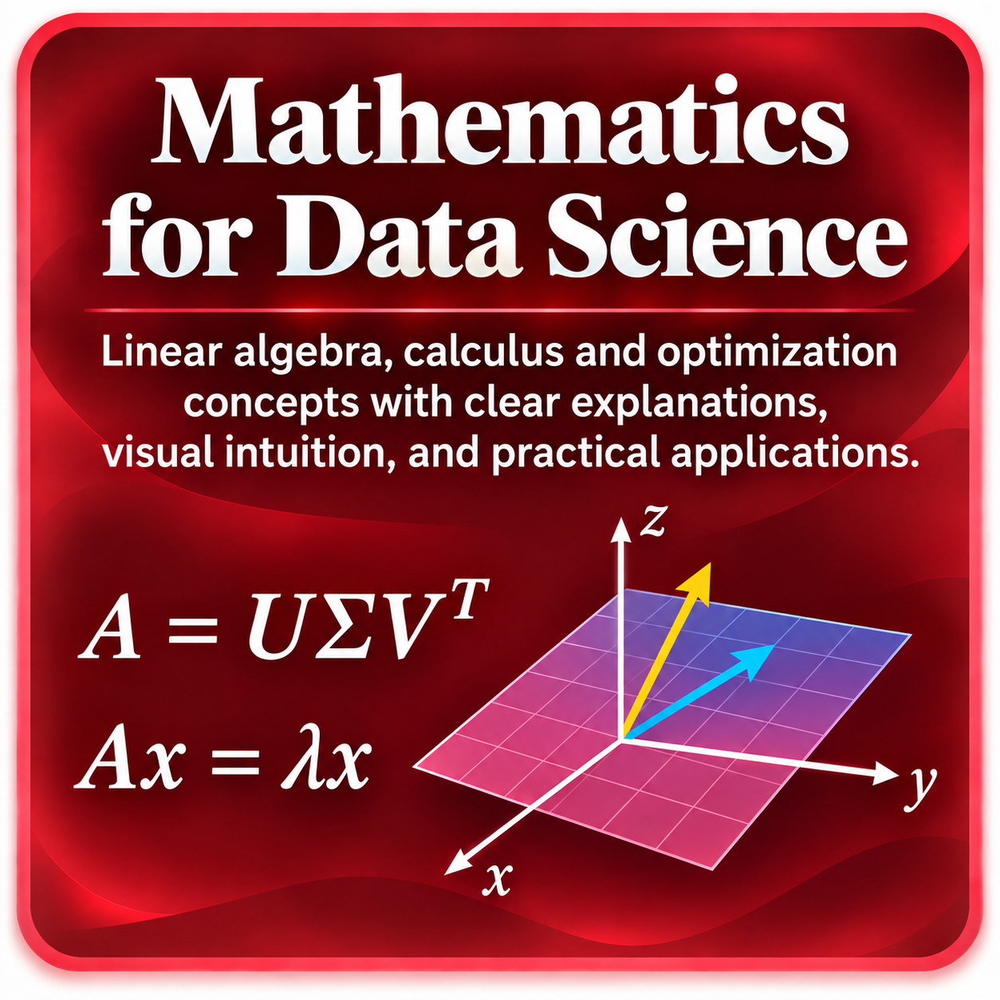

Scalars, Vectors and Matrices desde los fundamentos
Qué es un scalar, vector y matrix; dimensiones, shapes y notación matemática básica.
Próximamente
Una ruta estructurada desde vectores y matrices hasta PCA, SVD, cálculo multivariable y optimización.
Muchas herramientas de Data Science utilizan álgebra lineal, geometría y cálculo incluso cuando esas operaciones quedan ocultas dentro de una librería. Esta ruta está diseñada para hacer visibles esas ideas y construirlas desde los fundamentos.
Comenzamos con scalars, vectors y matrices; avanzamos hacia sistemas lineales, subespacios, projections, eigenvalues, PCA y SVD; y finalmente conectamos esas ideas con derivatives, gradients y optimization.

La ruta avanza desde vectors y matrices hacia linear systems y projections, luego eigenvalues, PCA y SVD, y termina con calculus, gradients y optimization.
Qué es un scalar, vector y matrix; dimensiones, shapes y notación matemática básica.
Aprende las operaciones fundamentales con vectores y su interpretación algebraica y geométrica.
Comprende el producto punto, similitud, ángulo entre vectores y aplicaciones en Data Science.
Estudia L1, L2, Euclidean Distance, Manhattan Distance y por qué las distancias importan en Machine Learning.
Suma, multiplicación, transpose, identity matrix y propiedades fundamentales de las matrices.
Interpreta la multiplicación de matrices desde una perspectiva algebraica y geométrica.
Representa sistemas lineales en forma matricial y comprende la solución de Ax = b.
Construye intuición sobre independencia lineal, espacios generados y bases.
Comprende qué significan rank y null space y qué revelan sobre la información contenida en una matriz.
Explora cómo una matriz transforma vectores mediante rotación, escala, proyección y otras transformaciones.
Relaciona determinants con invertibilidad, orientación y cambio de área o volumen.
Aprende matrix inverse, Moore–Penrose Pseudoinverse y su conexión con problemas de regresión.
Estudia vectores ortogonales, proyecciones y su conexión con Least Squares.
Comprende residuals, projection onto column space y la conexión con Linear Regression.
Aprende qué significan eigenvalues y eigenvectors, cómo se interpretan geométricamente y por qué son importantes.
Relaciona covariance matrices con variabilidad multivariada y estructura geométrica de los datos.
Estudia Principal Component Analysis, máxima varianza, eigenvectors y dimensionality reduction.
Comprende A = UΣVᵀ, singular values, rank y low-rank approximation.
Conecta SVD y PCA desde una perspectiva conceptual, algebraica y geométrica.
Funciones, pendiente, derivadas y tasa de cambio como base para optimización.
Extiende la idea de derivada a funciones con múltiples variables.
Comprende qué representa el gradient y por qué apunta en la dirección de mayor crecimiento.
Estudia Chain Rule, funciones compuestas y la base matemática de Backpropagation.
Aprende funciones objetivo, mínimos, máximos, learning rate, Gradient Descent y convergencia.
Comprende convex functions, local vs. global minima y por qué la convexidad facilita la optimización.
Primero construimos el lenguaje de vectors y matrices porque gran parte de Data Science representa los datos mediante estructuras matriciales. Después estudiamos linear systems, span, basis, rank y linear transformations para entender cómo se organiza y transforma la información.
Orthogonality, projections y Least Squares preparan el terreno para Eigenvalues, Eigenvectors, PCA y SVD, herramientas esenciales para reducción de dimensionalidad, compresión y análisis de estructura.
Finalmente, functions, derivatives, gradients, Chain Rule y convexity conectan esta base con optimization, Gradient Descent y los mecanismos matemáticos que permiten entrenar modelos de Machine Learning y Deep Learning.